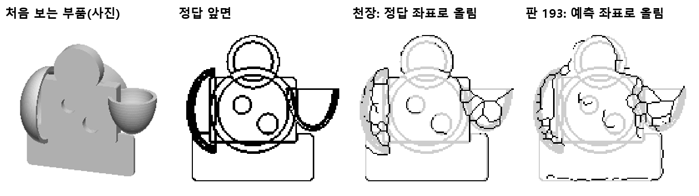

193 NOCS — 사진 화소마다 3D 좌표를 배우고 모서리를 기하로 3면도에 옮긴다 (11-14 · 모델193.py · 손으로 정리)
분석
한 줄로
물음: 사진을 통째로 3면도로 그리는 대신, 사진 화소마다 물체 3D 좌표(NOCS)를 배우고 사진의 모서리를 그 좌표로 올려 위 · 앞 · 옆에 찍으면 선이 살아나나?
답: 이 판은 아니다. 처음 보는 부품의 선 맞음이 0.198 로 대조(tr191 · 0.244)보다 낮다. 판정: 불합격. 원인은 확인했다 — 사진 한 장으로는 부품의 「앞」을 못 정해서 좌표가 z 축으로 돌아간 채 나온다.
왜 이 판을 했나
tr191 에서 데이터를 12 배로 늘려도 선이 안 살아났다. 실루엣을 잘 딴 장에서도 속 선은 그대로였고, 정보는 사진에 있었다(3면도 속 선의 45 % 가 사진 한 장에 보임). 사진 화소와 3면도 화소 사이에 기하 연결이 없는 게 문제라고 보고, 그 연결을 직접 만들었다. 우리 목표는 그림 한 장 → 3면도 → CAD 코드.
바꾼 것 하나
⑤의 출력. 정해진 축의 화폭 대신 사진 화소에 붙은 좌표 지도(xyz · 물체 영역)를 배운다. 선은 학습하지 않는다 — 사진 모서리(Canny) → 예측 좌표로 3D 점 → 정사영. 망은 DINO(마지막 4 층 학습) + 올림. 자료는 생성기 학습 부품 3,000 개 × 렌더 두 장 · 6,000 스텝 · 배치 32. 시험은 tr191 과 같은 생성기 시험 99 개 × 렌더 두 장.
결과

| 처음 보는 부품 198 장 | 이 판 | 대조(191 · 1,000 개) | 천장(정답 좌표) | 넘었나 |
|---|---|---|---|---|
| 선 단위 F1 | 0.198 | 0.244 | 0.592 | 통과선 0.344 · 실패선 0.274 이하 → 실패 |
| 방향 무관 선 단위 F1 | 0.245 | 0.302 |
선 단위 F1 = 선을 갈림점에서 끊은 조각마다 길이의 70 % 이상이 상대 선 2 화소 안이면 맞음으로 세어 낸 정밀 · 재현의 조화평균. 방향 무관 = 3면도를 z 축 네 방향으로 돌려 가장 잘 맞는 것.
왜 이렇게 나왔나
확인한 것
- 물체 영역은 거의 완벽하다(IoU 0.999). 학습 손실은 0.29 → 0.09 로 내려갔는데 시험 좌표 오차는 0.418 → 0.410 으로 그대로였다.
- 2,000 스텝 무게의 예측 좌표를 z 축 0 · 90 · 180 · 270° 중 정답에 가장 가까운 쪽으로 돌려 놓으면 오차가 0.412 → 0.205 로 절반이 된다. 가장 잘 맞는 방향이 「그대로」인 장은 0.449 뿐이고, 위 축은 다 맞았다.
- 그래서 처음 짐작한 「좌표를 아예 못 배운다」는 틀렸다. 좌표는 배우는데 앞쪽을 어디로 둘지를 정답과 다르게 고른다.
짐작 (아직 확인 안 함)
- 남은 오차는 물체 경계에서 좌표가 앞 · 뒤 면 사이 값으로 뭉개지는 탓이다. 그림의 꾸불꾸불한 선이 그 자리다.
한계
- 생성기(CAD) 렌더에서만 쟀다. 실제 사진은 바탕 · 무늬 모서리가 섞인다.
- 사진에 보이는 선만 옮긴다(천장 재현 0.496). 안 보이는 절반은 이 판의 범위 밖이다.
- 학습 부품 3,000 개 · 시드 하나.
배운 것과 다음
좌표 길은 「앞」을 정하지 못해 막혔고, 그 애매함은 문제 자체에 있다.
- tr193b: 손실을 z 축 네 돌림 중 최소로 바꿨다(193 이 끝나기 전에 판정기준 커밋 28c8a06). 1,000 · 2,000 스텝에서 방향 맞춘 좌표 오차 0.108 · 0.104, 방향 맞춘 선 단위 F1 0.28 · 0.30 로 193 보다 좋다.
- tr194: 사진 한 장 그림은 반쪽이라 지금 182 가 못 읽는다(「같다」 0) — 반쪽 3면도로 182 를 다시 배운다.